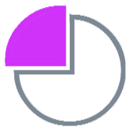
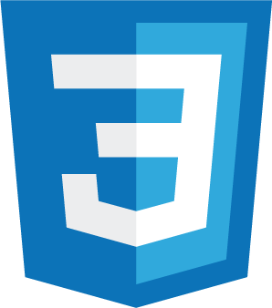
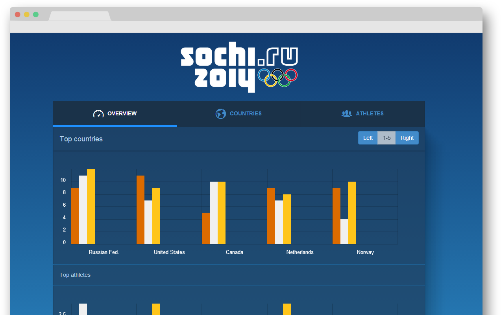

11
Informatika
 Miroslav Petrik
Miroslav Petrik
Proces vizualizácie dát
Chartmander.js
Vizualizácia dát prostredníctvom
HTML5 canvas elementu
Miroslav Petrik
“Čo nevieš odmerať nevieš manažovať.”
zistenie stavualebo trendu
vizualizácia
akcia
najrýchlejšia cesta ako odkomunikovať informáciu človeku
Ciele Práce
1. Cieľ
Preskúmanie problematiky a možností
vizualizácie dát na webových stránkach
Ozrejmiť proces vizualizácie dát
Vyhľadať knižnice určené na vizualizáciu dát
2. Cieľ
Popísanie nájdených knižníc
a ich filtrácia podľa kritérií:
-
schopnosť reprezentovať dáta v stĺpcovom, čiarovom a kruhovom diagrame
-
otvorený zdrojový kód
-
voľná licencia
Hlavný cieľ
Návrh vlastnej knižnice
kruhový, čiarový, stĺpcový diagram
Dôraz na animáciu a interaktívne prvky
Zhotovenie prezetačnej stránky
Otvorený repozitár v službe GitHub
Čo je potrebné aby sa z číslic a reťazcov stali grafy
Ide o komplexný proces, ktorý môžeme rozdeliť na sedem krokov. Jeho komplexita spočíva v čiastočnej obmene dát v rámci prechodu procesom.
Počítačové vedy
Štatistika
Matematika
Grafický dizajn
1. Získanie dát
nadobudnutie dát zo súboru na disku alebo z databázy servera v sieti prostredníctvom adresy URL cez API
2. Parsovanie
určenie štruktúry a zatriedenie dát do kategórií
3. Filtrácia
separácia zaujímavých dát
4. Dolovanie
zvolenie zaujímavých hodnôt za účelom poskytnutia kontextu napr. určenie maximálnej a minimálnej hodnoty množiny
5. Reprezentácia
zvolenie vizuálneho modelu pre dáta ako stĺpcový alebo kruhový diagram

6. Zušľachtenie
vylepšenie vizuálnej reprezentácie za účelom spraviť výsledok viac jasnejším alebo zaujímavejším
7. Interakcia
pridáva užívateľovi možnosť manipulovať s dátami
Použité technológie
Webové štandardy
HTML5
JavaScript

CSS3
Správa projektu

systém na správu verzií
GitHub

blogovacia platforma
Metodika práce
Vytvorenie zoznamu knižníc,
ich porovnanie a testovanie
zdroj informácií literatúra a Internet
porovnanie charakteristických vlastností
testovanie spotreby operačnej pamäte
Návrh a tvorba vlastnej
experimentálnej knižnice
Návrh algoritmu
Programovanie
Uverejnenie projektu
Výsledky práce
Zvolenie knižníc na testovanie
- NVD3
- Highcharts.js
- Chart.js
- Flot
- Google Chart Tools
- gRaphael
- jQplot
- RickShaw
SVG knižnice
NVD3
- novinka
- postavená na D3.js
- bez dokumentácie
- animácia a interakcia
Highcharts.js
- vyspelá knižnica
- bez závislosti
- plnohodnotná dokumentácia
- animácia a interakcia
Canvas knižnice
Flot
- vyspelá knižnica
- závislá na jQuery
- použiteľná dokumentácia
- interakcia bez animácie
Chart.js
- minimalistická knižnica
- bez závislosti
- plnohodnotná dokumentácia
- animácia bez interakcie
Charakteristika vlastnej, experimentálnej knižnice
Prezentačná stránka

Praktické použitie knižnice
Testovanie knižníc
použitie knižníc s variabilným počtom diagramov
použitá operačná pamäť v prehliadači Chrome 33.0.1750.117 m
zobrazenie výsledkov v diagramoch
Výsledok testovania
-
SVG náročnejšie na operačnú pamäť ako canvas element
-
v zásade platí
viac dát == viac pamäťe -
počet diagramov vplýva na pamäť len zriedka
-
Najlpší v SVG: NVD3, canvas: Flot/Chartmander.js
Záver
Vo svojej práci som sa zaoberal problematikou vizualizácie dát. Zdokumentoval a otestoval som viaceré možnosti tohto procesu. Predmetom vlastnej práce bolo zhotovenie vlastnej knižnice Chartmander.js. Knižnica dokáže vizualizovať data a zameriava sa na interakciu a animáciu.
Open source
11th.github.io/Chartmander/
Budúcnosť tejto práce
-
Testovanie knižnice
-
Doplnenie metód a dokumentácie
-
Animácia založená na čase
-
Responzivita